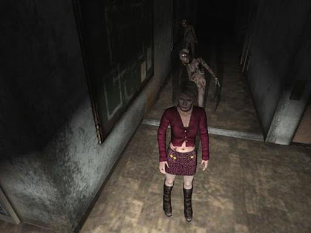
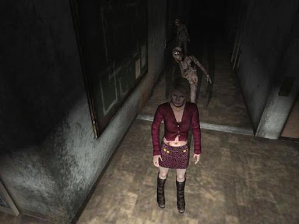
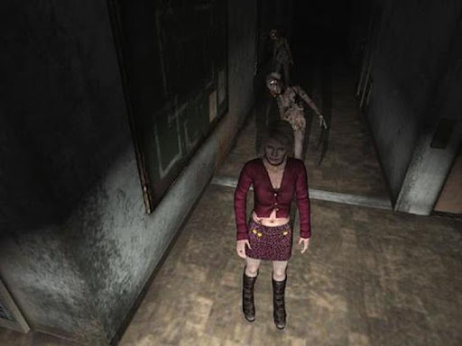

"Silent Hill 2" es una secuela independiente en la serie "Silent Hill", y aunque comparte el mismo universo y la ciudad titular de Silent Hill, su historia es completamente nueva y no está directamente relacionada con el primer juego. El protagonista es **James Sunderland**, quien recibe una carta de su difunta esposa, Mary, diciéndole que lo está esperando en su "lugar especial" en Silent Hill. Impulsado por el deseo de reunirse con ella, James viaja a la ciudad solo para encontrarla envuelta en una niebla espesa y poblada por criaturas monstruosas. A medida que James explora Silent Hill, se encuentra con otros personajes que también están atrapados en sus propios tormentos psicológicos:
La trama profundiza en temas de culpa, redención, y el dolor de la pérdida, con giros psicológicos que mantienen a los jugadores cuestionando la realidad de James y sus experiencias.
"Silent Hill 2" sigue las mecánicas básicas de survival horror con un fuerte énfasis en la atmósfera y la narrativa psicológica:
"Silent Hill 2" fue aclamado por la crítica y los jugadores por su profunda narrativa, su atmósfera inquietante y su enfoque psicológico del horror. Es ampliamente considerado uno de los mejores juegos de survival horror de todos los tiempos y un clásico en la historia de los videojuegos.
"Silent Hill 2" es un hito en el género de survival horror, ofreciendo una experiencia rica en narrativa y atmósfera que explora los rincones más oscuros de la psique humana. Su combinación de historia emocionalmente resonante, jugabilidad desafiante y una atmósfera de terror psicológico lo han asegurado un lugar permanente en la historia de los videojuegos.

OMORI sigue la historia de un joven llamado Omori y sus amigos mientras exploran un mundo de ensueño surrealista y enfrentan sus luchas en el mundo real. La trama profundiza en temas como la salud mental, el trauma y la complejidad de las emociones humanas. Los jugadores alternan entre un mundo onírico, lleno de fantasía y extrañeza, y una realidad más sombría y tangible.
El juego presenta mecánicas tradicionales de RPG por turnos con un giro único: un sistema de emociones. En este sistema, las emociones de los personajes (feliz, triste, enojado, etc.) influyen en sus habilidades y en las dinámicas de combate. Los jugadores deben gestionar los estados emocionales de sus personajes para obtener ventajas estratégicas en las batallas.
OMORI es conocido por su distintivo estilo artístico dibujado a mano, que combina imágenes adorables y perturbadoras para crear una atmósfera inquietante. Los visuales se complementan con una banda sonora que mezcla melodías tranquilas y escalofriantes, compuesta por Omocat y otros artistas, que refuerza el tono del juego.
OMORI ha sido aclamado por su narrativa conmovedora, su profundidad emocional y sus innovadoras mecánicas de juego. Ha logrado construir una base de fanáticos dedicados y ha recibido elogios por su representación honesta de problemas de salud mental y su historia impactante y emotiva.
OMORI es una experiencia que combina elementos tradicionales de RPG con una narrativa profunda y emotiva, ofreciendo a los jugadores una aventura inolvidable llena de misterio y sentimientos encontrados.
La historia de Fran Bow sigue a una joven llamada Fran, que se encuentra en una institución mental tras presenciar el brutal asesinato de sus padres. Devastada por la tragedia, Fran escapa del hospital psiquiátrico en busca de su gato desaparecido, Mr. Midnight, y respuestas sobre la muerte de sus padres. Durante su viaje, Fran atraviesa mundos alternos llenos de criaturas extrañas y situaciones aterradoras, alternando entre la realidad y un mundo oscuro y retorcido. La trama se desenvuelve a través de una serie de capítulos, cada uno presentando desafíos y enigmas únicos que Fran debe resolver para avanzar.
Fran Bow es un juego de aventura point-and-click, donde los jugadores deben explorar entornos, recolectar objetos y resolver acertijos para progresar en la historia. La mecánica principal del juego implica el uso de pastillas que permiten a Fran ver un mundo alterno, revelando pistas y objetos ocultos necesarios para resolver los rompecabezas. El juego se centra en la narrativa, presentando una combinación de elementos de horror psicológico y fantasía oscura. La interacción con personajes extraños y la exploración de escenarios perturbadores son fundamentales para avanzar en la historia y desentrañar el misterio central.
El soundtrack manifiesta melodías que acompañan cada situación de la historia de forma muy inmersiva, y con el paso del tiempo se distorsiona junto con la dirección perturbadora que sigue el juego.
Fran Bow contiene temas y escenas que pueden ser perturbadores para algunos jugadores, incluyendo violencia gráfica, referencias a enfermedades mentales y situaciones de terror psicológico. Se recomienda discreción para jugadores sensibles a estos temas.
Fran Bow ha sido aclamado por su historia conmovedora y su atmósfera única. Los críticos y jugadores han elogiado el juego por su capacidad para combinar elementos de terror y aventura de manera efectiva, así como por su estilo artístico distintivo y su narrativa emocionalmente resonante.
Fran Bow es una aventura de terror psicológico que destaca por su narrativa profunda, sus gráficos dibujados a mano y su atmósfera inquietante. A través de su emotiva historia y sus ingeniosos acertijos, ofrece una experiencia memorable y perturbadora para los aficionados al género de terror y las aventuras narrativas.
La protagonista de Silent Hill 3 es Heather Mason, una joven que se ve arrastrada a la aterradora ciudad de Silent Hill. La historia comienza cuando Heather se encuentra atrapada en un centro comercial, donde pronto descubre que está siendo perseguida por monstruos y entidades sobrenaturales. A medida que avanza el juego, Heather descubre una conexión personal con la ciudad y su oscuro pasado, desenterrando secretos relacionados con su propia identidad y los eventos del primer juego de la serie. La narrativa de Silent Hill 3 explora temas de identidad, maternidad y la lucha contra un culto religioso, proporcionando una experiencia psicológica profunda y aterradora.
Silent Hill 3 combina exploración, resolución de acertijos y combate en tercera persona. Los jugadores deben navegar por entornos oscuros y opresivos, recolectando objetos y resolviendo acertijos para progresar en la historia. El combate se centra en la gestión de recursos limitados, como municiones y suministros de salud, enfrentando a Heather contra una variedad de monstruos grotescos. El juego también incorpora elementos de terror psicológico, utilizando efectos visuales y auditivos perturbadores para crear una atmósfera constante de miedo e incertidumbre.
Compuesta por Akira Yamaoka, la música del juego refuerza la atmósfera de terror y la tensión emocional
Silent Hill 3 contiene escenas de violencia gráfica, horror psicológico y temas maduros que pueden ser perturbadores para algunos jugadores. Se recomienda discreción para aquellos sensibles a estos contenidos.
Silent Hill 3 ha sido aclamado por su capacidad para ofrecer una experiencia de terror verdaderamente inmersiva y su narrativa bien construida. Los críticos y jugadores han elogiado su atmósfera, diseño de personajes y la banda sonora, consolidando su estatus como un clásico del género de terror.
Silent Hill 3 es una obra maestra del terror y la supervivencia que ofrece una experiencia profunda y perturbadora. Con su combinación de narrativa envolvente, atmósfera opresiva y mecánicas de juego desafiantes, sigue siendo un título icónico en la historia de los videojuegos de terror.
"Alice: Madness Returns" es una secuela de "American McGee's Alice" y continúa la historia de una versión más oscura y retorcida del clásico "Alicia en el País de las Maravillas" de Lewis Carroll. El juego sigue a Alice Liddell, una joven que lucha con los efectos psicológicos de la muerte de su familia en un incendio trágico. Después de ser dada de alta de un manicomio, Alice vive en un orfanato en el Londres victoriano, bajo el cuidado de un psiquiatra. Sin embargo, sigue atormentada por visiones del País de las Maravillas, que ha sido corrompido y distorsionado por su trauma emocional. Para restaurar su cordura y descubrir la verdad detrás del incendio que mató a su familia, Alice debe regresar al País de las Maravillas y enfrentarse a las criaturas y desafíos que allí la esperan.
"Alice: Madness Returns" combina elementos de acción, plataformas y resolución de puzzles en un entorno de aventura oscura:
El juego presenta un estilo artístico distintivo y oscuro, con entornos surrealistas y detallados que reflejan la naturaleza perturbada del País de las Maravillas de Alice.
La banda sonora, compuesta por Chris Vrenna, exmiembro de Nine Inch Nails, complementa perfectamente la atmósfera inquietante del juego. Los efectos de sonido y las voces contribuyen a la inmersión y la tensión.
"Alice: Madness Returns" recibió críticas generalmente positivas, con elogios hacia su estilo artístico, diseño de niveles y la oscura reinterpretación del clásico "Alicia en el País de las Maravillas". Sin embargo, algunos críticos señalaron que la jugabilidad podía volverse repetitiva y mencionaron problemas con los controles de combate y plataformas.
"Alice: Madness Returns" es una experiencia de juego única que ofrece una visión oscura y retorcida del clásico cuento de Lewis Carroll. Con su combinación de acción, plataformas y puzzles, así como su atmósfera inquietante y narrativa psicológica, el juego se destaca como una aventura memorable en la PlayStation 3, Xbox 360 y Microsoft Windows. Los jugadores que disfrutan de historias profundas y perturbadoras encontrarán en "Alice: Madness Returns" un título que desafía tanto su ingenio como sus habilidades de combate.
"Rule of Rose" es un juego de survival horror que se desarrolla en la Inglaterra de la década de 1930. La protagonista es Jennifer, una joven de 19 años que, tras un incidente en un autobús, se encuentra atrapada en un orfanato abandonado llamado Rose Garden Orphanage. Este orfanato está dominado por un grupo de niñas sádicas que forman la Aristocracia Roja, una sociedad secreta con reglas y castigos crueles. La historia se narra a través de una serie de flashbacks y recuerdos distorsionados, presentando una trama compleja y emocionalmente intensa que aborda temas como el abuso, la pérdida y la inocencia corrompida. Jennifer debe navegar por el orfanato, enfrentándose a sus propios miedos y a las niñas que gobiernan el lugar, así como a criaturas monstruosas que reflejan los traumas de su pasado.
"Rule of Rose" combina elementos de exploración, resolución de puzzles y combate en un entorno de survival horror:
"Rule of Rose" presenta gráficos detallados y una atmósfera oscura y opresiva, con un diseño artístico que refleja la naturaleza retorcida y surrealista del orfanato y sus habitantes
La banda sonora, compuesta por Yutaka Minobe, utiliza instrumentos clásicos como el piano y el violín para crear una atmósfera melancólica y perturbadora. Los efectos de sonido y las voces también contribuyen significativamente a la sensación de tensión y horror.
"Rule of Rose" recibió críticas mixtas a positivas, elogiando su narrativa madura, atmósfera inquietante y originalidad, pero criticando sus mecánicas de combate y controles. El juego también generó controversia debido a su contenido, que fue malinterpretado por algunos medios como inapropiado, lo que llevó a su prohibición en ciertos países europeos.
"Rule of Rose" es un juego de survival horror único que destaca por su narrativa profunda y emocional, su atmósfera opresiva y su enfoque en temas psicológicos complejos. A pesar de sus controvertidos temas y mecánicas de juego imperfectas, ha ganado un estatus de culto entre los aficionados al género, siendo recordado como una experiencia intensa y perturbadora en la PlayStation 2.